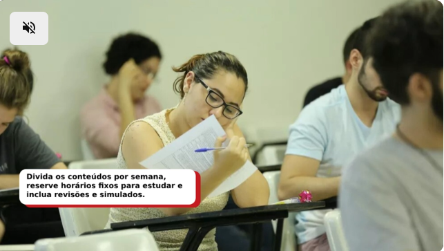

Interessados podem se inscrever até o dia 14 de dezembro, pela internet.
Por Redação g1 CE
19/11/2025 10h01 Atualizado há uma semana
Imparh abre seleção para 936 vagas em cursos de idiomas em Fortaleza. — Foto: Divulgação/Imparh
O Instituto Municipal de Desenvolvimento de Recursos Humanos (Imparh) está com inscrições abertas, até o dia 14 de dezembro, para a seleção de novos alunos do Centro de Línguas (CLI), em Fortaleza.
Clique aqui para seguir o canal do g1 CearáAo todo, são ofertadas 936 vagas para os cursos de alemão, espanhol, francês, inglês, italiano, japonês e português. Metade das vagas é reservada, prioritariamente, a alunos regularmente matriculados em escolas públicas municipais, estaduais ou federais, do ensino fundamental ao médio.
Como se preparar para um concurso: estratégias práticas para conquistar sua vaga
Podem participar da seleção candidatos com idade mínima de 14 anos e que tenham concluído ou estejam cursando, no mínimo, o 9º ano do ensino fundamental.
Inscrições
As inscrições para a seleção do Imparh são realizadas exclusivamente pela internet, no Canal de Concursos e Seleções da Prefeitura. A taxa de inscrição é de R$ 95, e o boleto deve ser pago até o dia 16 de dezembro de 2025.
A seleção será feita em única etapa, por meio de prova objetiva de caráter eliminatório e classificatório, composta por 30 questões de Língua Portuguesa e Conhecimentos Gerais/Atualidades. A aplicação está prevista para o dia 11 de janeiro de 2026, das 9h às 11h, em Fortaleza.
Os candidatos aprovados deverão efetuar matrícula presencialmente, na Secretaria do Centro de Línguas, e pagar a taxa semestral de R$ 90 (para cursos de idiomas estrangeiros) ou R$ 125 (para o curso de português, já incluindo o material didático).